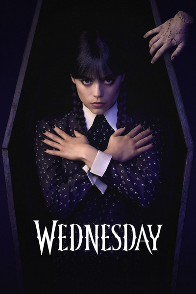

Meu perfil
Você ganha 22 XP por episódio assistido.
Suas séries
Visite o acervo e adicione uma série para assistir.
Ver séries
American Gods
3 temporadas · 26 episódios

House of the Dragon
3 temporadas · 26 episódios

The Big Bang Theory
12 temporadas · 279 episódios

The Acolyte
1 temporada · 8 episódios

Silo
3 temporadas · 30 episódios

Stuart Fails to Save the Universe
1 temporada · 10 episódios

The Ark
3 temporadas · 36 episódios

Dune: Prophecy
2 temporadas · 14 episódios

Dexter
8 temporadas · 96 episódios

The Walking Dead
11 temporadas · 177 episódios

The Sandman
2 temporadas · 21 episódios

The Witcher
5 temporadas · 40 episódios

Stranger Things
5 temporadas · 42 episódios

Game of Thrones
8 temporadas · 73 episódios

Breaking Bad
5 temporadas · 62 episódios

Black Mirror
7 temporadas · 33 episódios

Friends
10 temporadas · 236 episódios

The Last of Us
2 temporadas · 16 episódios

Dark
3 temporadas · 26 episódios
WandaVision
1 temporada · 9 episódios

Squid Game
3 temporadas · 22 episódios

Sex Education
4 temporadas · 32 episódios
Sense8
2 temporadas · 24 episódios

The Boys
5 temporadas · 40 episódios

Wednesday
2 temporadas · 16 episódios

How to Get Away with Murder
6 temporadas · 90 episódios

That '70s Show
8 temporadas · 200 episódios

How I Met Your Mother
9 temporadas · 208 episódios

How I Met Your Father
2 temporadas · 30 episódios

Avatar: The Last Airbender
2 temporadas · 15 episódios
Spider-Noir
1 temporada · 8 episódios

A Knight of the Seven Kingdoms
1 temporada · 6 episódios

Grey's Anatomy
23 temporadas · 467 episódios

Saving Hope
5 temporadas · 85 episódios

The Good Doctor
7 temporadas · 126 episódios
Constantine
1 temporada · 13 episódios
Gotham
5 temporadas · 100 episódios

Marvel's Daredevil
3 temporadas · 39 episódios

The Flash
9 temporadas · 184 episódios

Better Call Saul
6 temporadas · 63 episódios

Mr. Robot
4 temporadas · 45 episódios

Marvel's Jessica Jones
3 temporadas · 39 episódios

Marvel's Luke Cage
2 temporadas · 26 episódios

Marvel's Iron Fist
2 temporadas · 23 episódios

Ransom Canyon
2 temporadas · 18 episódios

Love Is Blind: France
1 temporada · 10 episódios
Arrow
8 temporadas · 170 episódios

Marvel's Agents of S.H.I.E.L.D.
7 temporadas · 136 episódios

Marvel's Agent Carter
2 temporadas · 18 episódios
Supergirl
6 temporadas · 126 episódios

DC's Legends of Tomorrow
7 temporadas · 110 episódios